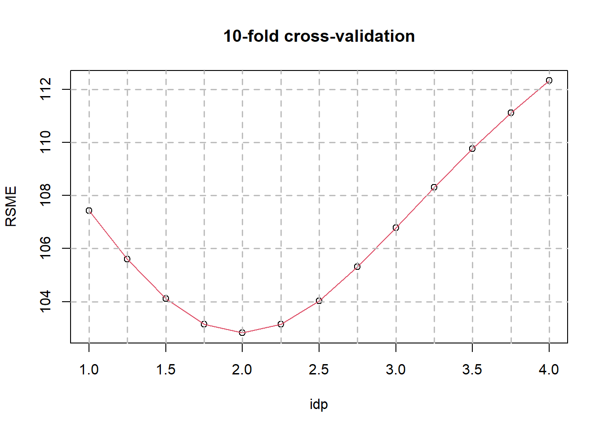

Chapter 6 Geostatistics
Prediction by grids of 0.015 x 0.015 degrees
InRn_Pred <- st_make_grid(Country, cellsize = .015, what = "polygons")
InRn_Pred <- st_sf(InRn_Pred)
SPDF <- st_centroid(InRn_Pred) # predict in the center of the grid
plot(InRn_Pred, reset = F)
plot(SPDF, add = T, col = 2, pch = 16, cex = 0.7)6.1 Inverse distance weighted interpolation (IDW)
### Optimal idp (10 k-fold Croos Validation) ----
data <- InRn_DL
res <- numeric()
IDP_RMSE <- numeric()
idp <- seq(1,4,0.25)
k <- 10
folds <- sample(x = 1:k, size = length(data$Rn), replace = TRUE)
CV <- matrix(NA,length(idp),2)
for (j in 1:length(idp)) {
for (i in 1:k) {
m_model <- data[folds != i, ]
m_valid <- data[folds == i, ]
m_valid_pred <- idw(Rn ~ 1 , m_model, m_valid,
nmax = 100,
maxdist = 40,
nmin = 5,
idp = idp[j])
res <- m_valid$Rn - m_valid_pred$var1.pred
IDP_RMSE[i] <- sqrt(mean(res^2))
}
CV[j,1] <- idp[j]
CV[j,2] <- sqrt(mean(IDP_RMSE^2))
}# [inverse distance weighted interpolation]
# [inverse distance weighted interpolation]
# [inverse distance weighted interpolation]
# [inverse distance weighted interpolation]
# [inverse distance weighted interpolation]
# [inverse distance weighted interpolation]
# [inverse distance weighted interpolation]
# [inverse distance weighted interpolation]
# [inverse distance weighted interpolation]
# [inverse distance weighted interpolation]
# [inverse distance weighted interpolation]
# [inverse distance weighted interpolation]
# [inverse distance weighted interpolation]
# [inverse distance weighted interpolation]
# [inverse distance weighted interpolation]
# [inverse distance weighted interpolation]
# [inverse distance weighted interpolation]
# [inverse distance weighted interpolation]
# [inverse distance weighted interpolation]
# [inverse distance weighted interpolation]
# [inverse distance weighted interpolation]
# [inverse distance weighted interpolation]
# [inverse distance weighted interpolation]
# [inverse distance weighted interpolation]
# [inverse distance weighted interpolation]
# [inverse distance weighted interpolation]
# [inverse distance weighted interpolation]
# [inverse distance weighted interpolation]
# [inverse distance weighted interpolation]
# [inverse distance weighted interpolation]
# [inverse distance weighted interpolation]
# [inverse distance weighted interpolation]
# [inverse distance weighted interpolation]
# [inverse distance weighted interpolation]
# [inverse distance weighted interpolation]
# [inverse distance weighted interpolation]
# [inverse distance weighted interpolation]
# [inverse distance weighted interpolation]
# [inverse distance weighted interpolation]
# [inverse distance weighted interpolation]
# [inverse distance weighted interpolation]
# [inverse distance weighted interpolation]
# [inverse distance weighted interpolation]
# [inverse distance weighted interpolation]
# [inverse distance weighted interpolation]
# [inverse distance weighted interpolation]
# [inverse distance weighted interpolation]
# [inverse distance weighted interpolation]
# [inverse distance weighted interpolation]
# [inverse distance weighted interpolation]
# [inverse distance weighted interpolation]
# [inverse distance weighted interpolation]
# [inverse distance weighted interpolation]
# [inverse distance weighted interpolation]
# [inverse distance weighted interpolation]
# [inverse distance weighted interpolation]
# [inverse distance weighted interpolation]
# [inverse distance weighted interpolation]
# [inverse distance weighted interpolation]
# [inverse distance weighted interpolation]
# [inverse distance weighted interpolation]
# [inverse distance weighted interpolation]
# [inverse distance weighted interpolation]
# [inverse distance weighted interpolation]
# [inverse distance weighted interpolation]
# [inverse distance weighted interpolation]
# [inverse distance weighted interpolation]
# [inverse distance weighted interpolation]
# [inverse distance weighted interpolation]
# [inverse distance weighted interpolation]
# [inverse distance weighted interpolation]
# [inverse distance weighted interpolation]
# [inverse distance weighted interpolation]
# [inverse distance weighted interpolation]
# [inverse distance weighted interpolation]
# [inverse distance weighted interpolation]
# [inverse distance weighted interpolation]
# [inverse distance weighted interpolation]
# [inverse distance weighted interpolation]
# [inverse distance weighted interpolation]
# [inverse distance weighted interpolation]
# [inverse distance weighted interpolation]
# [inverse distance weighted interpolation]
# [inverse distance weighted interpolation]
# [inverse distance weighted interpolation]
# [inverse distance weighted interpolation]
# [inverse distance weighted interpolation]
# [inverse distance weighted interpolation]
# [inverse distance weighted interpolation]
# [inverse distance weighted interpolation]
# [inverse distance weighted interpolation]
# [inverse distance weighted interpolation]
# [inverse distance weighted interpolation]
# [inverse distance weighted interpolation]
# [inverse distance weighted interpolation]
# [inverse distance weighted interpolation]
# [inverse distance weighted interpolation]
# [inverse distance weighted interpolation]
# [inverse distance weighted interpolation]
# [inverse distance weighted interpolation]
# [inverse distance weighted interpolation]
# [inverse distance weighted interpolation]
# [inverse distance weighted interpolation]
# [inverse distance weighted interpolation]
# [inverse distance weighted interpolation]
# [inverse distance weighted interpolation]
# [inverse distance weighted interpolation]
# [inverse distance weighted interpolation]
# [inverse distance weighted interpolation]
# [inverse distance weighted interpolation]
# [inverse distance weighted interpolation]
# [inverse distance weighted interpolation]
# [inverse distance weighted interpolation]
# [inverse distance weighted interpolation]
# [inverse distance weighted interpolation]
# [inverse distance weighted interpolation]
# [inverse distance weighted interpolation]
# [inverse distance weighted interpolation]
# [inverse distance weighted interpolation]
# [inverse distance weighted interpolation]
# [inverse distance weighted interpolation]
# [inverse distance weighted interpolation]
# [inverse distance weighted interpolation]
# [inverse distance weighted interpolation]
# [inverse distance weighted interpolation]
# [inverse distance weighted interpolation]
# [inverse distance weighted interpolation]
# [inverse distance weighted interpolation]
# [inverse distance weighted interpolation]
# [inverse distance weighted interpolation]CV <- as.data.frame(CV)
names(CV) <- c("idp","RSME")
plot(RSME ~ idp, CV)
lines(RSME ~ idp, CV, col = 2)
axis(1, labels = F, at = seq(0,10,0.5))
abline(v = seq(0,4,0.25), lty = 2, lwd = 1.5, col="gray")
abline(h = seq(100,200,2), lty = 2, lwd = 1.5, col = "gray")
title("10-fold cross-validation")
IDW (optimal idp = 2)
Pred_IDW <- idw(Rn ~ 1 , InRn_DL, SPDF,
nmax = 100,
maxdist = 40, # km; Unprojected data: great-circle distance; For projected data Euclidian distances are computed
nmin = 5,
idp = 2)# [inverse distance weighted interpolation]SPDF$IDW_Pred <- Pred_IDW$var1.predPlot map (grids cells of 0.015 x 0.015 degrees)
InRn_Pred$IDW_Pred <- Pred_IDW$var1.pred
# Breaks
breaks <- c(0, 50, 100, 200, 300, 500, max(InRn_Pred$IDW_Pred, na.rm = T))
InRn_Pred <- InRn_Pred %>% mutate(IDW_brks = cut(IDW_Pred, breaks, include.lowest = T, right = F))
# Plot predictions
cols <- colorRampPalette(c("blue", "red"))(6)
P_IDW_Pred <- ggplot() +
geom_sf(data = Country) +
geom_sf(data = InRn_Pred, aes(fill = IDW_brks, color = IDW_brks)) +
scale_fill_manual(name = "Bq/m3", values = cols, guide = guide_legend(reverse = TRUE)) +
scale_color_manual(name = "Bq/m3", values = cols, guide = guide_legend(reverse = TRUE)) +
geom_sf(data = InRn_DL, cex = 0.5) +
ggtitle("IDW - Predictions")
P_IDW_Pred6.2 Ordinary Kriging
### Variogram (gstat) ----
vg <- variogram(LogRn ~ 1, InRn_DL) # great-circle distances (km)
vg_fit_Sph <- fit.variogram(vg, model = vgm("Sph"))
vg_fit_Exp <- fit.variogram(vg, vgm("Exp"))plot(gamma ~ dist, vg,
ylim = c(0, 1.05*max(vg$gamma)),
col = 1,
ylab = "semivariance",
xlab = 'distance',
main = "Variogram")
lines(variogramLine(vg_fit_Sph, 100), col = 'red')
lines(variogramLine(vg_fit_Exp, 100), col = 'blue')
vg_fit <- vg_fit_ExpTest: Random permutations (100 random variograms)
V_Env <- list()
nsim <- 100
for (i in 1:nsim) {
RP <- InRn_DL
RP$LogRn <- sample(InRn_DL$LogRn)
g_RP <- gstat(formula = LogRn ~ 1, data = RP)
vg_RP <- variogram(g_RP, cressie = F)
V_Env[[i]] <- vg_RP
}
vg_fit_Table <- data.frame(Model = vg_fit$model,
psill = round(vg_fit$psill, 2),
range = round(vg_fit$range, 2),
kappa = round(vg_fit$kappa, 2)
)
vg_Line <- cbind(variogramLine(vg_fit, maxdist = max(vg$dist)), id = "Model")
ggplot(vg, aes(x = dist, y = gamma, colour = id)) +
geom_line(data = bind_rows(V_Env, .id="df"), aes(x = dist, y = gamma, group = df), colour="grey") +
geom_point() +
geom_line(data = vg_Line, size = 0.8) +
ylim(0,2.5) +
annotation_custom(tableGrob(vg_fit_Table,rows = NULL),
xmin = 20, xmax = 45, ymin = 0.1, ymax = 1) +
ggtitle("Variogram")
Interpolation - TransGaussian kriging using Box-Cox transforms (gstat) —-
SPDF <- as_Spatial(SPDF)
InRn_DL <- as_Spatial(InRn_DL)
lambda <- 0
Pred_OK <- krigeTg(Rn ~ 1, InRn_DL, SPDF,
model = vg_fit,
lambda = lambda,
maxdist = 40, # km (great-circle distances)
nmax = 100,
nmin = 5) # [using ordinary kriging]
# [generalized least squares trend estimation]
# [using simple kriging]SPDF$OK_Pred <- Pred_OK$var1TG.pred
SPDF$OK_SD <- sqrt(Pred_OK$var1TG.var)
SPDF$OK_RSD <- sqrt(Pred_OK$var1TG.var)/Pred_OK$var1TG.predPlot predictions (grids cells of 0.025 x 0.025 degrees)
InRn_Pred$OK_Pred <- Pred_OK$var1TG.pred
InRn_Pred$OK_SD <- sqrt(Pred_OK$var1TG.var)
InRn_Pred$OK_RSD <- sqrt(Pred_OK$var1TG.var)/Pred_OK$var1TG.pred
# Back to sf format
InRn_DL <- as(InRn_DL, "sf")
SPDF <- as(SPDF, "sf")# Breaks
breaks <- c(0, 50, 100, 200, 300, 500, max(InRn_Pred$OK_Pred, na.rm = T))
InRn_Pred <- InRn_Pred %>% mutate(OK_brks = cut(OK_Pred, breaks, include.lowest = T, right = F))
# Plot predictions
cols <- colorRampPalette(c("blue", "red"))(6)
P_OK_Pred <- ggplot() +
geom_sf(data = Country) +
geom_sf(data = InRn_Pred, aes(fill = OK_brks, color = OK_brks)) +
scale_fill_manual(name = "Bq/m3", values = cols, guide = guide_legend(reverse = TRUE)) +
scale_color_manual(name = "Bq/m3", values = cols, guide = guide_legend(reverse = TRUE)) +
geom_sf(data = InRn_DL, cex = 0.5) +
ggtitle("OK - Predictions")
P_OK_Pred
Summarize by grids cells of 10 km x 10 km
## Estimate the mean of the points in each grid cell of 10 km x 10 km ----
# (or municipalities, districts, ...)
ggplot() +
geom_sf(data = Country) +
geom_sf(data = Grids_10km)+
geom_sf(data = SPDF, col = 2, cex = 0.7)
## Intersect predictions (points - SPDF) and Grid cells of 10km x 10km ----
SPDF_Grids10km <- st_intersection(SPDF, Grids_10km)
summary(SPDF_Grids10km)# IDW_Pred OK_Pred OK_SD OK_RSD CELLCODE EOFORIGIN
# Min. : 1 Min. : 8 Min. : 6.5 Min. :0.057 Length:4489 Min. :5120000
# 1st Qu.: 21 1st Qu.: 21 1st Qu.: 16.3 1st Qu.:0.435 Class :character 1st Qu.:5150000
# Median : 41 Median : 37 Median : 22.3 Median :0.697 Mode :character Median :5160000
# Mean : 65 Mean : 56 Mean : 28.6 Mean :0.714 Mean :5163836
# 3rd Qu.: 77 3rd Qu.: 68 3rd Qu.: 33.7 3rd Qu.:0.973 3rd Qu.:5180000
# Max. :1356 Max. :594 Max. :111.3 Max. :1.781 Max. :5210000
#
# NOFORIGIN Id GID_0 NAME_0 geometry
# Min. :3610000 387 : 65 Length:4489 Length:4489 POINT :4489
# 1st Qu.:3650000 388 : 65 Class :character Class :character epsg:NA : 0
# Median :3670000 390 : 65 Mode :character Mode :character +proj=long...: 0
# Mean :3674636 446 : 65
# 3rd Qu.:3700000 447 : 65
# Max. :3730000 476 : 65
# (Other):4099Summarize (by Id)
SPDF_Grids10km_Sum <- SPDF_Grids10km %>%
group_by(Id) %>%
summarize(N = n(),
IDW_AM = mean(IDW_Pred, na.rm = T),
IDW_SD = sd(IDW_Pred, na.rm = T),
OK_AM = mean(OK_Pred, na.rm = T),
OK_SD = sd(OK_Pred, na.rm = T))Add values to Grid cells of 10 x 10 km (Grids_10km_Sum)
Grids_10km_Sum <- left_join(Grids_10km_Sum %>% as.data.frame(),
SPDF_Grids10km_Sum %>% as.data.frame(),
by = "Id")
Grids_10km_Sum <- Grids_10km_Sum %>%
st_sf(sf_column_name = "geometry.x")
summary(Grids_10km_Sum)# CELLCODE EOFORIGIN NOFORIGIN Id
# Length:93 Min. :5120000 Min. :3610000 340 : 1
# Class :character 1st Qu.:5150000 1st Qu.:3640000 341 : 1
# Mode :character Median :5160000 Median :3670000 361 : 1
# Mean :5163871 Mean :3674516 362 : 1
# 3rd Qu.:5180000 3rd Qu.:3710000 363 : 1
# Max. :5210000 Max. :3740000 364 : 1
# (Other):87
# GID_0 NAME_0 N.x Case
# Length:93 Length:93 Min. : 0.0 Min. :0.00
# Class :character Class :character 1st Qu.: 7.0 1st Qu.:0.00
# Mode :character Mode :character Median :12.0 Median :0.00
# Mean :10.8 Mean :0.77
# 3rd Qu.:14.0 3rd Qu.:1.00
# Max. :22.0 Max. :9.00
# NA's :7
# AM SD GM GSD MIN
# Min. : 3 Min. : 1 Min. : 2 Min. :1.12 Min. : 0.3
# 1st Qu.: 19 1st Qu.: 19 1st Qu.: 11 1st Qu.:2.28 1st Qu.: 1.7
# Median : 39 Median : 39 Median : 24 Median :2.75 Median : 4.2
# Mean : 69 Mean : 68 Mean : 45 Mean :2.95 Mean : 11.4
# 3rd Qu.: 86 3rd Qu.: 77 3rd Qu.: 54 3rd Qu.:3.44 3rd Qu.: 11.3
# Max. :687 Max. :549 Max. :472 Max. :6.20 Max. :143.2
# NA's :7 NA's :11 NA's :7 NA's :11 NA's :7
# MAX AM_brks Prob Prob_brks N.y
# Min. : 5 [0,25) :29 Min. : 0.0 [0,1) :29 Min. : 1.0
# 1st Qu.: 59 [25,50) :23 1st Qu.: 0.6 [1,5) :28 1st Qu.:38.0
# Median : 132 [50,75) : 9 Median : 2.8 [5,10) :13 Median :62.0
# Mean : 213 [75,100) : 9 Mean : 7.6 [10,20) :14 Mean :48.8
# 3rd Qu.: 230 [100,200):12 3rd Qu.: 9.7 [20,30) : 4 3rd Qu.:63.0
# Max. :1615 [200,687]: 4 Max. :79.8 [30,79.8]: 5 Max. :65.0
# NA's :7 NA's : 7 NA's :1
# IDW_AM IDW_SD OK_AM OK_SD
# Min. : 9 Min. : 1.1 Min. : 12 Min. : 0.4
# 1st Qu.: 26 1st Qu.: 10.3 1st Qu.: 25 1st Qu.: 4.8
# Median : 46 Median : 17.2 Median : 37 Median : 10.8
# Mean : 67 Mean : 30.6 Mean : 56 Mean : 17.6
# 3rd Qu.: 84 3rd Qu.: 35.3 3rd Qu.: 74 3rd Qu.: 19.8
# Max. :425 Max. :220.5 Max. :340 Max. :132.7
# NA's :1 NA's :3 NA's :1 NA's :3
# geometry.x geometry.y geometry
# POLYGON :93 GEOMETRYCOLLECTION: 7 GEOMETRYCOLLECTION: 1
# epsg:4326 : 0 MULTIPOINT :82 MULTIPOINT :90
# +proj=long...: 0 POINT : 4 POINT : 2
# epsg:4326 : 0 epsg:NA : 0
# +proj=long... : 0 +proj=long... : 0
#
# Plot maps
# Breaks
breaks_IDW <- c(0, 25, 50, 75, 100, 200, max(Grids_10km_Sum$IDW_AM, na.rm = T))
breaks_OK <- c(0, 25, 50, 75, 100, 200, max(Grids_10km_Sum$OK_AM, na.rm = T))
Grids_10km_Sum <- Grids_10km_Sum %>%
mutate(IDW_brks = cut(IDW_AM, breaks_IDW, include.lowest = T, right = F),
OK_brks = cut(OK_AM , breaks_OK , include.lowest = T, right = F))
# Maps
P_Grids10km_IDW <- ggplot() +
geom_sf(data = Country) +
geom_sf(data = Grids_10km_Sum, aes(fill = IDW_brks)) +
scale_fill_manual(name = "Bq/m3", values = cols, guide = guide_legend(reverse = TRUE)) +
ggtitle("IDW - Predictions")
P_Grids10km_OK <- ggplot() +
geom_sf(data = Country) +
geom_sf(data = Grids_10km_Sum, aes(fill = OK_brks)) +
scale_fill_manual(name = "Bq/m3", values = cols, guide = guide_legend(reverse = TRUE)) +
ggtitle("OK - Predictions")
# Plot maps
grid.arrange(P_Grids10km_AM, P_Grids10km_IDW, P_Grids10km_OK, nrow = 1, ncol = 3)## Export results to shape file (.shp) for GIS: InRn_Pred and Grids_10km_Sum
#st_write(InRn_Pred, "InRn_Pred.shp", delete_layer = TRUE) # overwrites
#st_write(Grids_10km_Sum, "Grids_10km_Sum.shp", delete_layer = TRUE) # overwrites